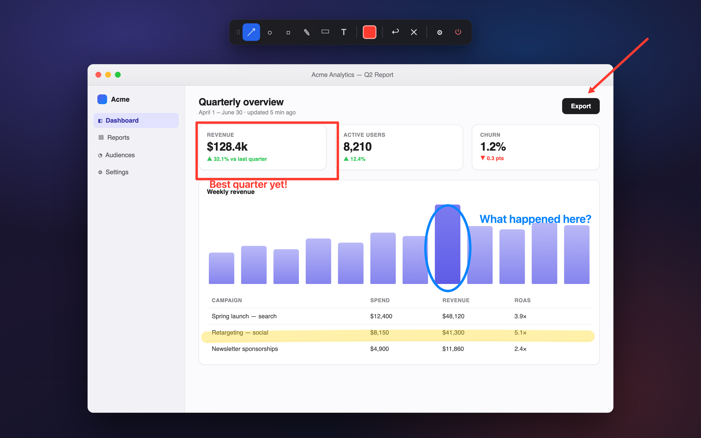
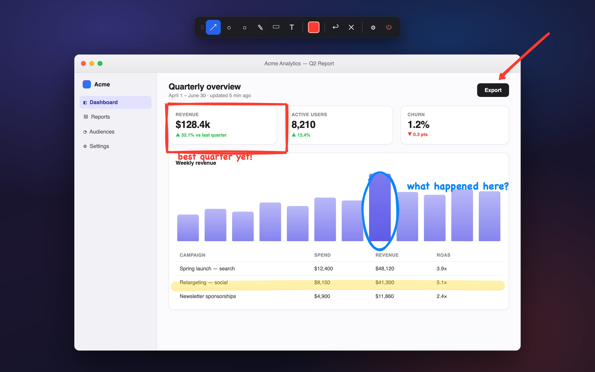
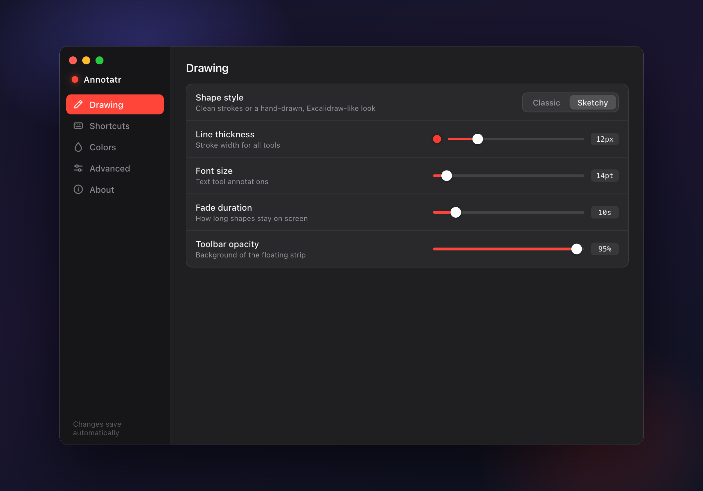
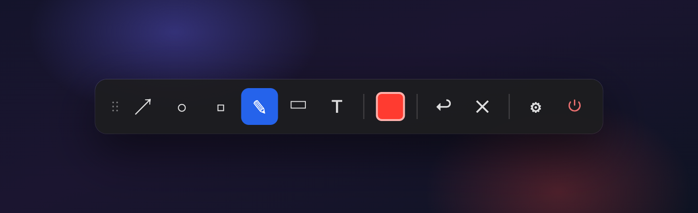

Annotatr is a featherweight overlay for screen recordings, demos and tutorials. Summon a tiny toolbar with a hotkey, draw arrows, boxes, highlights and text over any app — and watch them fade away on their own.
No screen sharing plugins, no editing afterwards. Annotatr floats above every app and stays out of the way of your recording.
Summon the toolbar or jump straight to a tool from any app — ⌃⇧D and you're drawing. Every binding is configurable, with OS-conflict warnings.
Shapes melt away with a smooth ease-out after a duration you choose. Your screen never collects clutter mid-take.
Flip one toggle for a hand-drawn, Excalidraw-style look — powered by rough.js, with handwriting-style text to match.
Each tool keeps its own color. Adjust thickness, font size and arrow heads once — change a color right from the toolbar swatch mid-recording.
The overlay follows your cursor to whichever display you're on, and shapes stay confined to the monitor they were drawn on. Retina-crisp everywhere.
Hit ⌘E, click any shape, and tweak its color or thickness — or delete it. Undo with ⌘Z, wipe everything with ⌘⇧X.
Drag the divider — same annotations, two renderers. Classic for crisp, professional callouts; Sketchy when you want that whiteboard feel.



Style, thickness, fade timing, hotkeys, colors — everything saves automatically, and you can export the whole config as JSON.

Six tools, a color swatch, undo and clear. Drag it anywhere — or park it off-screen so your recording stays spotless.
Defaults shown — every global hotkey is rebindable in Settings. On Windows and Linux, ⌘ is Ctrl.
Check the releases page for prebuilt binaries, or clone and build with the commands on the right.
Node.js 18+ and the Rust toolchain. On macOS you'll also want the Xcode Command Line Tools.
The toolbar pops up over whatever you're doing. Pick a tool, drag, done — shapes fade on their own.
$ git clone https://github.com/dennisrongo/annotatr.git $ cd annotatr $ ./init.sh # checks prereqs, installs, runs # or build a production bundle: $ npm run tauri:build